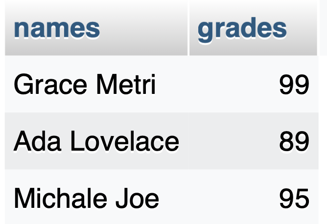

Introduction to Databases and MySQL
What is a Database?
- ★ A database is an organized collection of data that can be easily accessed, managed, and updated.
- ★ Example: A contact list on your phone is a simple database — it stores names, phone numbers, and emails.
What is SQL and MySQL?
- ★ SQL stands for Structured Query Language.
- ♣ SQL is a standard language for storing, manipulating, and retrieving data in databases.
- ♣ SQL is a query programming language for managing RDBMS (Relational Database Management System).
- ★ MySQL is a Relational Database Management System (RDBMS) that uses SQL.
- ♣ MySQL is software, but
SQL is a database language
.
- ♣ It’s free and open-source, and works great with PHP.
Why MySQL
- ★ With PHP, you can connect to and manipulate databases.
- ★ MySQL is the most popular database system used with PHP.
What is MySQL?
- ★ MySQL is a database system used on the web
- ★ MySQL is a database system that runs on a server
- ★ MySQL is ideal for both small and large applications
- ★ MySQL is very fast, reliable, and easy to use
- ★ MySQL uses standard SQL
- ★ MySQL compiles on a number of platforms
- ★ MySQL is free to download and use
- ★ MySQL is developed, distributed, and supported by Oracle Corporation
What is RDBMS?
- ★
RDBMS
stands for Relational Database Management System.
- ★ RDBMS is a program used to maintain a relational database.
- ★ RDBMS is the basis for all modern database systems such as MySQL, Microsoft SQL Server, Oracle, and
Microsoft Access.
- ★ RDBMS uses
SQL queries
to access the data in the database.
What is a Relational Database?
- ☆ A relational database stores data in tables
with rows and columns.
- ☆ Each table stores information about one type of thing (e.g., users, products, orders).
- ☆ Rows represent individual records.
- ☆ Columns represent attributes or fields of those records.
- ☆ Tables can be related using keys
MySQL Data Types (Common Ones)
- ☆ Every column in a SQL table must be assigned a data type.
- ☆ That’s because SQL needs to know what kind of data will be stored in each column — like text, numbers, dates, or long paragraphs.
| Data Type |
Description |
Example |
| INT |
Whole number |
123, -1 |
| VARCHAR |
Variable-length string (up to limit) |
'Hello', 'abc123' |
| TEXT |
Long text |
'This is a big note' |
| DATE |
Date only |
'2025-04-01' |
| DATETIME |
Date and time |
'2025-04-01 14:30:00' |
| DOUBLE |
Decimal number (approximate) |
3.5, 4.0, 2.75 |
| DECIMAL(3,2) |
Exact decimal (3 total digits, 2 after decimal) |
3.50, 4.00 |
What is a Database Table?
- ★ The data in a MySQL database are stored in tables. A table is a collection of related data, and it
consists of columns and rows.
- ★ A column holds specific information about every record in the table.
- ★ A record (or row) is each individual entry that exists in a table.

Creating a Database and Inserting Student Records in MySQL
SQL:
-- Create a new database
CREATE DATABASE school;
-- Switch to the new database
USE school;
-- Create the students table
CREATE TABLE students (
id INT AUTO_INCREMENT PRIMARY KEY,
name VARCHAR(100),
age INT,
email VARCHAR(100)
);
-- Insert multiple student records
INSERT INTO students (name, age, email) VALUES
('Alice', 14, 'alice@school.com'),
('Bob', 15, 'bob@school.com'),
('Charlie', 13, 'charlie@school.com'),
('Diana', 14, 'diana@school.com'),
('Ethan', 15, 'ethan@school.com');
🔑 What is a Primary Key?
- ★ A primary key is a column (or combination of columns) that uniquely identifies each row in a table.
- ★ No two rows can have the same primary key value.
- ★ It cannot be NULL.
- ★ In the
students table, the id column is the primary key.
- ★ Example:
In your students table:
id INT AUTO_INCREMENT PRIMARY KEY
- ♣ Each student gets a unique ID number.
- ♣ The AUTO_INCREMENT ensures that MySQL automatically increases the number for each new student.
Why is a Primary Key important?
- ★ It helps keep your data organized and consistent.
- ★ It makes searching, updating, or deleting specific records easier.
How to Start AUTO_INCREMENT from a Custom Number (e.g., 1111)
Option 1:
- ★ You cannot directly set the AUTO_INCREMENT to start at 1111 in the CREATE TABLE statement itself, but you can set it immediately after using ALTER TABLE.
-- Create the table first
CREATE TABLE students (
id INT AUTO_INCREMENT PRIMARY KEY,
name VARCHAR(100),
age INT,
email VARCHAR(100)
);
-- Set the AUTO_INCREMENT starting value to 1111
ALTER TABLE students AUTO_INCREMENT = 1111;
Option 2:
- ★ However, if you're using MySQL 8.0+, there's a little trick: you can include the AUTO_INCREMENT=1111 in the CREATE TABLE statement like this:
CREATE TABLE students (
id INT AUTO_INCREMENT PRIMARY KEY,
name VARCHAR(100),
age INT,
email VARCHAR(100)
) AUTO_INCREMENT=1111;
Composite Key
- ★ A primary or unique key made of multiple columns.
- ★ Example: Table with a Composite Primary Key
CREATE TABLE enrollments (
student_id INT,
course_id INT,
enrollment_date DATE,
PRIMARY KEY (student_id, course_id)
);
- ☆ No two rows have the same (student_id, course_id) combination — so it satisfies the rule of a primary key.